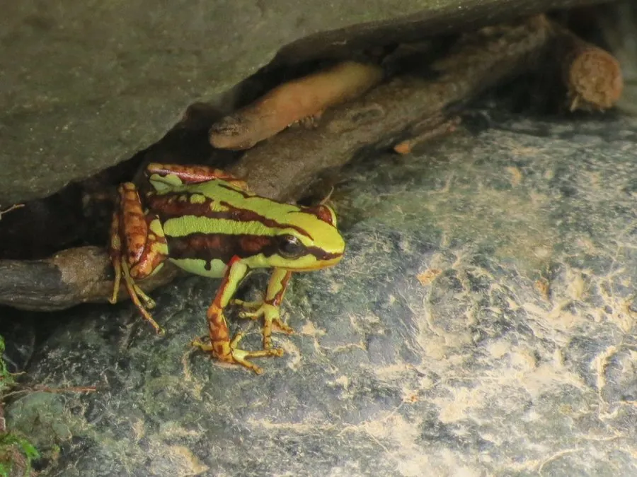

两栖动物 · 动物界
三色箭毒蛙 Epipedobates tricolor

厄瓜多尔特有的小型箭毒蛙，身上有红、白、黑三色条纹，皮肤毒素中的镇痛成分曾推动新药研究，分布范围十分狭窄。
- 分类
- 门脊索动物门纲两栖纲目无尾目科箭毒蛙科属上毒蛙属
- 栖息环境
- 厄瓜多尔安第斯山西侧的湿润低地雨林落叶层
- 地理分布
- 厄瓜多尔西部少数低地雨林区域
- 保护级别
- IUCN 易危（VU）；CITES 附录 II；非中国原产
物种志
三色箭毒蛙体长仅 2–3 厘米，是体型很小的箭毒蛙，皮肤光滑，背面呈暗红色或橙红色，体侧有白色或淡黄色纵纹，四肢与体侧还分布着黑色或蓝黑色的细纹，形成红、白、黑三色搭配；趾端有吸盘，适合在落叶和植物间攀爬。
它仅分布于厄瓜多尔安第斯山西侧的湿润低地雨林，白天在落叶层活动，以蚂蚁、螨虫和小甲虫为食，皮肤毒素来自这些猎物。繁殖期雄蛙鸣叫，雌蛙在落叶上产卵约 6–10 枚，雄蛙把孵化的蝌蚪背到积水处，蝌蚪在水中生活数周后变态。它皮肤毒素中的埃皮巴替丁具有强效镇痛作用，曾激发新型镇痛药物的研究。由于分布狭窄和雨林破坏，其种群受到威胁，被列为易危物种；在中国属外来物种，不可随意放生。
形态与习性
- 食性蚂蚁、螨虫和小甲虫
- 体长2–3 cm
- 毒性皮肤含生物碱毒素，毒素来自食物
- 繁殖卵生，每窝 6–10 枚，雄蛙背蝌蚪到积水处
- 活动节律昼行性
- 科学价值毒素中的埃皮巴替丁具有强效镇痛作用
趣味知识
- 三色箭毒蛙的红、白、黑三色条纹在落叶层中十分醒目，是典型的警戒色。
- 它皮肤毒素中的埃皮巴替丁具有强效镇痛作用，曾推动新型镇痛药研究。
- 三色箭毒蛙分布范围极小，仅见于厄瓜多尔西部少数雨林。